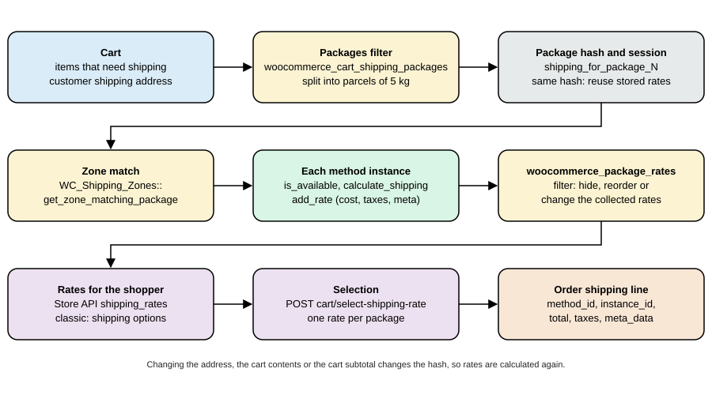
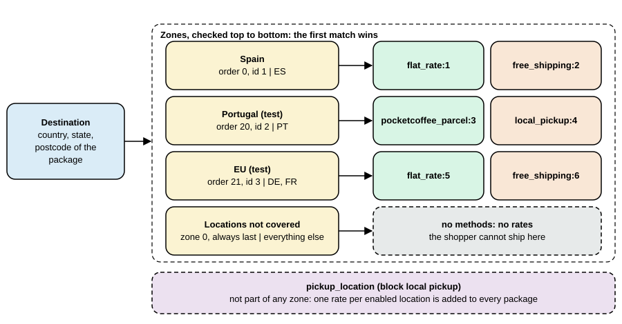
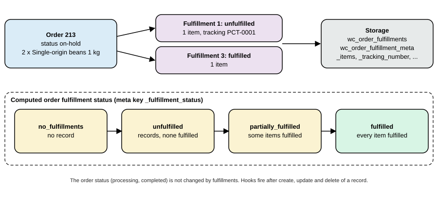

Shipping Methods
|
This content was generated with the assistance of AI and should be verified against the official documentation before being relied on in production. |
Shipping is the part of the WooCommerce checkout that answers one question: given what is in the cart and where it is going, which delivery options does the shopper get, and what does each cost? Everything else (zones, methods, classes, packages, rates, pickup points) exists to answer it, and a second feature, fulfillments, records afterwards what was actually sent. This page covers all of it for WooCommerce 11.2.1 on WordPress 7.1.3 (checked on 2026-10-27): the shipping settings, the zone model and how a destination is matched to a zone, the three methods that ship with WooCommerce and their settings, shipping classes, the WC_Shipping_Method API for writing a method, how the cart splits goods into packages and caches rates, how rates travel through the Store API and into the order, local pickup in its classic and block forms, and the order fulfillments feature.
The running example is the Pocket Coffee shop: in Spain a parcel costs 4.90 EUR and is free from 40 EUR, the rest of the European Union pays 9.90 EUR, and no parcel may weigh more than 5 kg. A small plugin, pocket-coffee-shipping, adds a method that implements the parcel price, the free-shipping threshold and the weight limit, and a filter that splits a heavy cart into several parcels. It was installed in a disposable WordPress 7.1.3 and WooCommerce 11.2.1 Docker stack (PHP 8.3, MariaDB 11.8, HPOS on, block checkout), and the outputs below were produced there. The test store already had a Spain zone used by the other pages of this section, so the Pocket Coffee rules were run on stand-in zones: Portugal for the Spanish rule (4.90 EUR, free from 40 EUR, 5 kg) and Germany and France for the European rule; the configuration for Spain is the same with the country ES. The last section lists what was run and what could not be.
Related pages: Cart and Checkout Blocks for where the shipping step appears, Store API for the cart endpoints used below, Payment Gateways for the payment step that follows, Taxes, Coupons, Currencies and i18n for the tax that is added to shipping, and Products and Product Types for weights, dimensions and shipping classes of products. The language is PHP (see the PHP section of this site).
The shipping model
A cart that needs shipping is turned into one or more packages. For each package WooCommerce looks up the shipping zone that matches the destination, asks every shipping method instance of that zone for its rates, lets filters adjust the list, and stores the rates in the session. The shopper picks one rate per package, and the order stores the choice as a shipping line item. The five words in bold are the five objects to know.
| Object | What it is |
|---|---|
Package |
An array with |
Zone |
A named group of regions (continents, countries, states and postcode patterns) with an order number. The first zone, by order, that contains the destination decides the available methods. The built-in zone 0, Locations not covered by your other zones, catches the rest. |
Method |
A class that extends |
Rate |
A |
Shipping line |
The |

Settings
Where shipping is enabled
WooCommerce > Settings > General decides where the store ships. The option woocommerce_ship_to_countries has four meanings: the empty value ships to all the countries the shop sells to, all ships to all countries, specific ships only to the countries chosen in woocommerce_specific_ship_to_countries, and disabled turns shipping and shipping calculations off (every product then behaves as if it did not need shipping). The selling countries are woocommerce_allowed_countries. These options limit the addresses the checkout accepts; the zones decide the costs.
The Shipping tab
WooCommerce > Settings > Shipping has the sections Shipping zones, Settings (the options below), Classes and Local pickup (the pickup locations of the block method). In 11.2.1 it also has Fulfillment providers when the fulfillments feature is on (see Fulfillments).
| Setting in the UI | Option | Values (default) | Effect |
|---|---|---|---|
Enable the shipping calculator on the cart page |
|
|
Lets the shopper enter an address in the classic cart to see rates. |
Hide shipping costs until an address is entered |
|
|
Hides the shipping line and rates in the classic cart until an address is known. |
Hide other shipping methods when free shipping is available |
|
|
When a free-shipping rate exists, all other rates except local pickup are dropped from the package. |
Shipping destination |
|
|
Which customer address is the default for the destination, or whether the shipping address is forced to be the billing address. |
Debug mode |
|
|
Shows the matching zones to administrators and bypasses the rate cache (see Caching). |
Source: WooCommerce docs: Shipping
Saving anything under the Shipping tab increments the shipping transient version (WC_Cache_Helper::get_transient_version( 'shipping', true )), which invalidates the cached zone and rate data.
Shipping zones
How a destination is matched
A zone has a name, an order number and a list of regions: continents, countries, states (ES:B is Barcelona province) and postcodes. To find the zone of a package, WC_Shipping_Zones::get_zone_matching_package() builds a key from the country, state and normalized postcode of $package['destination'], looks for a cached answer in the shipping_zones object-cache group and otherwise asks the data store, which selects the zone with the lowest zone_order (and the lowest zone_id among equal orders) whose regions contain the destination. The rules of the query in 11.2.1:
-
A zone matches when one of its
countryrows equals the destination country, one of itsstaterows equals<country>:<state>, one of itscontinentrows equals the continent of the country, or when it has no region at all. -
Postcode rows do not match by themselves: they restrict the zone. If a zone has postcode rows and the destination postcode matches none of them, the zone is excluded even though its country matched. A postcode row can use a wildcard (
SW1*or28*), a range (10000...14199) or an exact value, and a zone can hold several of them. The matching uses the helperwc_postcode_location_matcher()(since 2.6.0, shared with tax rates), which normalizes the postcode and understands wildcards and ranges; for postcodes that are not purely numeric a range is compared in a numeric form of the characters. -
When nothing matches, the zone with ID 0 is used; it can have methods like any other zone.
-
The filter
woocommerce_get_zone_criteriacan add SQL conditions to the query.
Zone order is therefore the way to make a specific zone win over a general one: Berlin postcodes above Germany above Europe. Since 11.1.0 the zones screen shows a warning on a zone that can never be matched because a higher zone already covers all of its regions (WC_Shipping_Zones::get_zones_with_order_conflict_warnings(), whose message tells the merchant to move the zone above the one that shadows it).

Storage
| Table | Content |
|---|---|
|
|
|
|
|
|
|
One row per instance named |
Creating zones: admin, WP-CLI, REST and PHP
In the admin the zones screen has Add zone, a region picker and Add shipping method. The same data can be written four ways. Through WP-CLI the zone and its methods can be created and listed (the CLI has no command to set the regions of a zone; wp wc shipping_zone_location only lists them):
wp wc shipping_zone create --name="Pocket Coffee Italy (cli test)" --order=30 --user=admin --porcelain
wp wc shipping_zone_method create 4 --method_id=flat_rate --settings='{"title":"Italy flat rate","cost":"9.90"}' --user=admin --porcelain
wp wc shipping_zone_method list 4 --user=admin --fields=id,instance_id,method_id,enabled,order --format=table
wp wc shipping_zone delete 4 --force=true --user=admin --porcelain4 7 id instance_id method_id enabled order 7 7 flat_rate 1 1 4
The REST API writes regions with PUT /wc/v3/shipping/zones/{id}/locations, a list of { "code": ..., "type": ... } objects that replaces the zone’s locations. This is the script that created the Pocket Coffee test zones (the keys are placeholders; Basic authentication works over HTTPS only):
API=https://shop.example.test/wp-json/wc/v3
AUTH=ck_xxxxxxxx:cs_xxxxxxxx
# Portugal: the stand-in for the Spanish rule (4.90 EUR per parcel, free from 40 EUR, 5 kg)
curl -s -u $AUTH -H 'Content-Type: application/json' -X POST $API/shipping/zones \
-d '{"name":"Pocket Coffee Portugal (pcship test)","order":20}'
curl -s -u $AUTH -H 'Content-Type: application/json' -X PUT $API/shipping/zones/2/locations \
-d '[{"code":"PT","type":"country"}]'
curl -s -u $AUTH -H 'Content-Type: application/json' -X POST $API/shipping/zones/2/methods \
-d '{"method_id":"pocketcoffee_parcel","settings":{"title":"Pocket Coffee parcel","cost":"4.90","free_over":"40","max_weight":"5"}}'
curl -s -u $AUTH -H 'Content-Type: application/json' -X POST $API/shipping/zones/2/methods \
-d '{"method_id":"local_pickup","settings":{"title":"Collect at the roastery","cost":"0"}}'
# Germany and France: the stand-in for the rest of the EU (9.90 EUR flat, per-class surcharge, free from 60 EUR)
curl -s -u $AUTH -H 'Content-Type: application/json' -X POST $API/shipping/zones \
-d '{"name":"Pocket Coffee EU (pcship test)","order":21}'
curl -s -u $AUTH -H 'Content-Type: application/json' -X PUT $API/shipping/zones/3/locations \
-d '[{"code":"DE","type":"country"},{"code":"FR","type":"country"}]'
curl -s -u $AUTH -H 'Content-Type: application/json' -X POST $API/shipping/zones/3/methods \
-d '{"method_id":"flat_rate","settings":{"title":"EU flat rate","cost":"9.90","class_cost_26":"14.90","type":"class"}}'
curl -s -u $AUTH -H 'Content-Type: application/json' -X POST $API/shipping/zones/3/methods \
-d '{"method_id":"free_shipping","settings":{"title":"EU free shipping","requires":"min_amount","min_amount":"60"}}'The same objects can be created in PHP, which is how a plugin or a migration ships a store’s zones. WC_Shipping_Zone::add_shipping_method() returns the new instance ID, and the instance settings are the option named by get_instance_option_key(). This script was run with wp eval-file; it created a zone, a flat-rate instance and a location, asked WooCommerce which zone matches an address in Rome, and deleted the zone:
$zone = new WC_Shipping_Zone();
$zone->set_zone_name( 'Pocket Coffee Italy (php test)' );
$zone->set_zone_order( 30 );
$zone->add_location( 'IT', 'country' );
$zone_id = $zone->save();
$instance_id = $zone->add_shipping_method( 'flat_rate' );
$method = WC_Shipping_Zones::get_shipping_method( $instance_id );
$method->init_instance_settings();
$method->instance_settings['title'] = 'Italy flat rate';
$method->instance_settings['cost'] = '9.90';
update_option( $method->get_instance_option_key(), $method->instance_settings );
$package = array( 'destination' => array( 'country' => 'IT', 'state' => '', 'postcode' => '00100', 'city' => 'Roma' ) );
echo WC_Shipping_Zones::get_zone_matching_package( $package )->get_zone_name();
WC_Shipping_Zones::delete_zone( $zone_id );zone 6 instance 9 option woocommerce_flat_rate_9_settings flat_rate:9 title=Italy flat rate cost=9.90 locations: ["IT:country"] zone matching Rome: Pocket Coffee Italy (php test) deleted
The other methods of WC_Shipping_Zone are get_zone_name(), get_zone_order(), get_zone_locations(), get_formatted_location(), get_shipping_methods( $enabled_only, $context ), set_locations(), clear_locations() and delete_shipping_method( $instance_id ); the static WC_Shipping_Zones adds get_zones(), get_zone( $id ), get_zone_by(), get_shipping_method( $instance_id ) and delete_zone(). Hooks fire when an instance is added (woocommerce_shipping_zone_method_added), deleted (woocommerce_shipping_zone_method_deleted) or switched on or off through REST (woocommerce_shipping_zone_method_status_toggled); woocommerce_shipping_zone_shipping_methods filters the methods a zone returns.
A postcode zone, run
A zone with the country DE and the postcode range 10000...14199, order 19 (above the EU zone of order 21), with a flat rate of 5.00 EUR "Berlin courier", was created and three carts were priced through the Store API:
Berlin 10115 -> flat_rate:8 Berlin courier 500 (zone Berlin postcodes) Munich 80331 -> flat_rate:5 EU flat rate 990 (postcode outside the range: the EU zone) Potsdam 14469 -> flat_rate:5 EU flat rate 990 (14469 is above 14199)
The location rows stored for that zone were DE country and 10000...14199 postcode. (Store API amounts are in minor units: 500 is 5.00 EUR.)
The methods that ship with WooCommerce
WooCommerce 11.2.1 contains three zone-based methods and, in the legacy-* folders, the pre-2.6 methods (legacy flat rate, legacy free shipping, legacy international delivery, legacy local delivery and legacy local pickup) that exist only for stores that still use them; new stores should not.
Flat rate
flat_rate charges a cost that can be a number or a formula. The instance settings are title, tax_status (taxable or none), cost, one class_cost_<term id> per shipping class, no_class_cost and type (class or order). Formulas may use the placeholders [qty] (the number of items that need shipping), [cost] (the total of their lines) and the shortcode [fee percent="10" min_fee="20" max_fee=""], which adds a percentage of [cost] bounded by a minimum and a maximum; arithmetic uses + - * / and parentheses and is evaluated by WC_Eval_Math, not by eval(). The filter woocommerce_evaluate_shipping_cost_args can change the arguments (qty, cost) before evaluation. Examples of valid costs: 10.00, 5.00 * [qty], 4.90 + [fee percent="3" min_fee="1"].
Shipping classes. A class (Settings > Shipping > Classes) groups products such as "Equipment". A product gets a class on its Shipping tab or through the REST field shipping_class (the slug). With classes defined, the flat rate adds the class costs: with type = class ("per class") it charges the base cost plus the cost of each class found in the package, and with type = order ("per order") it charges the base cost plus the highest class cost. An empty class cost means "no extra charge for this class"; no_class_cost is the extra charge for products with no class. WooCommerce stores class costs under the term ID since 2.5.0 (older settings used the slug). The test store had the class equipment-pcship (term 26) with the flat rate above (cost 9.90, class cost 14.90, per class); a cart with the Starter kit (class equipment-pcship) to Berlin returned flat_rate:5 at 24.80 EUR (9.90 + 14.90) and a cart with one 250 g bag returned 9.90.
Free shipping
free_shipping is a method with no cost whose availability depends on a requirement. requires is one of the empty value (no requirement), coupon (a valid coupon with "Allow free shipping" on), min_amount, either (minimum amount or coupon) and both. min_amount is compared with the cart’s displayed subtotal minus the coupon discounts (and minus the discount tax when prices are shown including tax) unless ignore_discounts is yes, in which case the order total before coupons is used. The comparison uses wc_get_price_decimals() rounding. Because it is only a method with is_available() logic, a free-shipping rate appears next to the paid ones; the preselected rate is the first one of the package in the classic cart and the first one that is not a local pickup method in the Cart and Checkout blocks (filter woocommerce_shipping_chosen_method), so a merchant who wants free shipping to replace the paid rate sets woocommerce_shipping_hide_rates_when_free (all other rates except local pickup are removed) or orders the instances so that the free one comes first. In the test the EU zone’s free shipping with a 60 EUR minimum appeared for three Starter kits (72 EUR) beside the flat rate, which stayed selected.
Local pickup
There are two local pickup methods in 11.2.1 and they differ in important ways.
Classic local_pickup |
Block pickup_location |
|
|---|---|---|
Where it lives |
A normal zone method with instances ( |
A method that is not part of any zone. It is registered only when the Checkout block is the default checkout, and it adds one rate per enabled pickup location ( |
Settings |
The instance modal of the zone. |
Settings > Shipping > Local pickup: option |
Rate data |
Label and cost. |
Meta data |
Taxes |
"By default store base taxes apply regardless of customer address" (the method description). |
Taxes use the pickup location address ( |
Both are local pickup methods: the order’s shipping address is hidden for them (woocommerce_order_hide_shipping_address), the checkout block does not require a shipping address when only pickup is chosen, and the filter woocommerce_local_pickup_methods lists the method IDs treated that way (the block method registers itself there). LocalPickupUtils::is_local_pickup_method() answers the question for any method ID, and WC_Shipping::calculate_shipping_for_package() still returns pickup rates for a package that cannot be shipped (for example to an unsupported country).
The classic instance was run as "Collect at the roastery" (cost 0) in the Portugal zone: it appeared next to the parcel rate, selecting it through the Store API changed total_shipping from 490 to 0, and an order placed with it stored the shipping line local_pickup, instance 4, total 0.00. The block method was run by writing the two options below (and restored to empty arrays right after the run, because it adds a rate to every package of the shared store):
wp option update woocommerce_pickup_location_settings '{"enabled":"yes","title":"Pickup","tax_status":"none","cost":""}' --format=json
wp option update pickup_location_pickup_locations '[{"name":"Pocket Coffee Roastery","address":{"address_1":"Calle del Tostador 12","city":"Madrid","state":"M","postcode":"28001","country":"ES"},"details":"Open Monday to Friday, 9-14h","enabled":true}]' --format=jsonA cart to Berlin then listed a second rate:
flat_rate:5 EU flat rate 990
pickup_location:0 Pickup (Pocket Coffee Roastery) 0
meta: pickup_location = Pocket Coffee Roastery
pickup_address = Calle del Tostador 12, 28001 Madrid, Madrid
pickup_details = Open Monday to Friday, 9-14h
Saving either option flushes the shipping transient version (flush_cache), so the change is visible at once. The settings and locations can also be written through the REST route registered by PickupLocationsRestController (capability manage_woocommerce), which is what the React screen uses.
Writing a shipping method
The WC_Shipping_Method API
A shipping method is a class that extends WC_Shipping_Method (which extends WC_Settings_API). WooCommerce keeps one prototype object per registered method (instance ID 0, used to list the method in the admin and to hold the global settings) and creates one object per instance in a zone with the instance ID passed to the constructor.
| Member | Meaning |
|---|---|
|
Unique method ID ( |
|
|
|
Name and description shown to the merchant. |
|
Name shown to the shopper; normally |
|
Array of features, see the next table. The base default is |
|
|
|
|
|
Settings API field definitions for the instance and for the global ("standalone") form. |
|
The rates collected by |
|
Override this. Compute the cost for the package and call |
|
Whether the method applies to the package. The base version checks that the method is enabled (and the legacy country list for non-zone methods) and filters the answer with |
|
Creates a |
|
|
|
Called by WooCommerce: |
|
Instance-aware settings storage. For an instance, |
$this->supports controls where the method appears in the admin:
| Value | Effect |
|---|---|
|
A standalone settings screen under Settings > Shipping (the global form). The default. |
|
The method can be added to shipping zones. Without it the method is a legacy non-zone method. |
|
The zone instance has its own settings page. |
|
The instance settings open in a modal (the modern UI). Price inputs in the bundled methods use the CSS class |
|
The method is a local pickup method: the shipping address can be omitted and the order’s shipping address is hidden (the block |
The registration has two parts. The class is loaded on woocommerce_shipping_init (WC_Shipping::init() fires it, so the base class exists), and its name is added to the array of the filter woocommerce_shipping_methods, keyed by the method ID. woocommerce_load_shipping_methods fires after the registered classes are loaded for a package, with the package as argument, so a method can register an object manually (the block pickup method does). The WC_Shipping object keeps the registered methods; WC()->shipping()->get_shipping_classes() lists the shipping classes.
The rate ID is the key of everything the shopper and the order see. Never change the ID of a method that is in use: carts and orders store it.
Settings API for a method
Instance fields are defined in $this->instance_form_fields, usually in the constructor or an init() method, and saved with process_admin_options() which is hooked to woocommerce_update_options_shipping_<id>. Use sanitize_callback to validate each field when it is saved; a price field must be a text field (so that the decimal separator of the locale can be typed) with a callback that turns the locale’s separator into a dot. WooCommerce 11.2.1 offers NumberUtil::sanitize_cost_in_current_locale() for that, which the bundled methods use. The older documentation example writes its own sanitize_cost() that strips the currency symbol and throws an exception for non-numeric input.
The Pocket Coffee Shipping plugin
The plugin file
The plugin file declares compatibility (as the payment plugin of the previous page does), loads the method class on woocommerce_shipping_init, adds it to woocommerce_shipping_methods and registers the parcel splitter on woocommerce_cart_shipping_packages.
<?php
/**
* Plugin Name: Pocket Coffee Shipping
* Description: A weight-limited parcel shipping method and a parcel splitter for Pocket Coffee.
* Version: 1.0.0
* Requires at least: 7.0
* Requires PHP: 7.4
* Requires Plugins: woocommerce
* Text Domain: pocket-coffee-shipping
* License: GPL-2.0-or-later
*
* @package PocketCoffee\Shipping
*/
defined( 'ABSPATH' ) || exit;
add_action(
'before_woocommerce_init',
static function () {
if ( class_exists( \Automattic\WooCommerce\Utilities\FeaturesUtil::class ) ) {
\Automattic\WooCommerce\Utilities\FeaturesUtil::declare_compatibility( 'custom_order_tables', __FILE__, true );
\Automattic\WooCommerce\Utilities\FeaturesUtil::declare_compatibility( 'cart_checkout_blocks', __FILE__, true );
}
}
);
// 1. Load the class when WooCommerce initializes its shipping system and add it to the list of methods.
add_action(
'woocommerce_shipping_init',
static function () {
require_once __DIR__ . '/includes/class-wc-shipping-pocketcoffee-parcel.php';
}
);
add_filter(
'woocommerce_shipping_methods',
static function ( $methods ) {
$methods['pocketcoffee_parcel'] = 'WC_Shipping_PocketCoffee_Parcel';
return $methods;
}
);
// 2. Split the shipping package into parcels of at most 5 kg.
require_once __DIR__ . '/includes/parcels.php';
add_filter( 'woocommerce_cart_shipping_packages', 'pocketcoffee_split_into_parcels' );The method
pocketcoffee_parcel has four instance settings: cost (the price of one parcel, default 4.90), free_over (the cart subtotal from which parcels are free, 0 disables the rule), max_weight (kilograms per parcel, default 5) and the usual title and tax_status. It is unavailable when the package is heavier than max_weight, which is how a zone can offer "no parcel service" for a single unit that is too heavy. The weight of each product is converted from the store’s unit with wc_get_weight( $weight, 'kg' ): the test store was installed with pounds (woocommerce_weight_unit = lbs) while the Pocket Coffee weights are kilograms, so the test products were saved with 0.5511 lb for the 250 g bag, 2.2046 lb for the 1 kg bag and 2.6455 lb for the kit. A plugin that reads $product->get_weight() without converting is wrong on every store whose unit differs from the one it assumed. The free-shipping rule compares $package['cart_subtotal'], the subtotal of the whole cart, which a package copy inherits, so a split cart still earns free shipping on its total.
<?php
/**
* Pocket Coffee parcel shipping method.
*
* @package PocketCoffee\Shipping
*/
use Automattic\WooCommerce\Enums\ProductTaxStatus;
use Automattic\WooCommerce\Utilities\NumberUtil;
defined( 'ABSPATH' ) || exit;
/**
* Flat price per parcel, free above an order subtotal, unavailable for parcels that are too heavy.
*/
class WC_Shipping_PocketCoffee_Parcel extends WC_Shipping_Method {
/**
* Cost per parcel.
*
* @var string
*/
public $cost = '0';
/**
* Order subtotal from which the method is free (0 disables).
*
* @var string
*/
public $free_over = '0';
/**
* Maximum parcel weight in kg.
*
* @var string
*/
public $max_weight = '5';
/**
* Constructor.
*
* @param int $instance_id Shipping method instance ID (0 for the "global" object WooCommerce uses to list methods).
*/
public function __construct( $instance_id = 0 ) {
$this->id = 'pocketcoffee_parcel';
$this->instance_id = absint( $instance_id );
$this->method_title = __( 'Pocket Coffee parcel', 'pocket-coffee-shipping' );
$this->method_description = __( 'A price per parcel, free above a subtotal, limited by parcel weight.', 'pocket-coffee-shipping' );
$this->supports = array(
'shipping-zones',
'instance-settings',
'instance-settings-modal',
);
$this->init();
}
/**
* Define the form and load the saved values.
*/
public function init() {
$this->instance_form_fields = array(
'title' => array(
'title' => __( 'Name', 'pocket-coffee-shipping' ),
'type' => 'text',
'default' => __( 'Pocket Coffee parcel', 'pocket-coffee-shipping' ),
'desc_tip' => true,
),
'tax_status' => array(
'title' => __( 'Tax status', 'pocket-coffee-shipping' ),
'type' => 'select',
'default' => ProductTaxStatus::TAXABLE,
'options' => array(
ProductTaxStatus::TAXABLE => __( 'Taxable', 'pocket-coffee-shipping' ),
ProductTaxStatus::NONE => _x( 'None', 'Tax status', 'pocket-coffee-shipping' ),
),
),
'cost' => array(
'title' => __( 'Cost per parcel', 'pocket-coffee-shipping' ),
'type' => 'text',
'default' => '4.90',
'desc_tip' => true,
'sanitize_callback' => array( $this, 'sanitize_amount' ),
),
'free_over' => array(
'title' => __( 'Free from subtotal', 'pocket-coffee-shipping' ),
'type' => 'text',
'default' => '0',
'description' => __( '0 disables free shipping.', 'pocket-coffee-shipping' ),
'desc_tip' => true,
'sanitize_callback' => array( $this, 'sanitize_amount' ),
),
'max_weight' => array(
'title' => __( 'Maximum weight per parcel (kg)', 'pocket-coffee-shipping' ),
'type' => 'text',
'default' => '5',
'sanitize_callback' => array( $this, 'sanitize_amount' ),
),
);
$this->title = $this->get_option( 'title' );
$this->tax_status = $this->get_option( 'tax_status' );
$this->cost = $this->get_option( 'cost' );
$this->free_over = $this->get_option( 'free_over' );
$this->max_weight = $this->get_option( 'max_weight' );
add_action( 'woocommerce_update_options_shipping_' . $this->id, array( $this, 'process_admin_options' ) );
}
/**
* Accept a decimal number in the shop's locale.
*
* @param string|null $value Raw value.
* @return string
*/
public function sanitize_amount( $value ) {
return NumberUtil::sanitize_cost_in_current_locale( $value );
}
/**
* Weight of a package in kg.
*
* @param array $package Package.
* @return float
*/
protected function get_package_weight( $package ) {
$weight = 0.0;
foreach ( $package['contents'] as $item ) {
$weight += (float) wc_get_weight( (float) $item['data']->get_weight(), 'kg' ) * (int) $item['quantity'];
}
return $weight;
}
/**
* Hide the method when the parcel is too heavy.
*
* @param array $package Package.
* @return bool
*/
public function is_available( $package ) {
$available = $this->get_package_weight( $package ) <= (float) $this->max_weight;
return $available && parent::is_available( $package );
}
/**
* Add the rate.
*
* @param array $package Package.
*/
public function calculate_shipping( $package = array() ) {
$cost = (float) $this->cost;
$label = $this->title;
// "cart_subtotal" is the subtotal of the whole cart, also when the package is only one parcel of it.
if ( (float) $this->free_over > 0 && (float) $package['cart_subtotal'] >= (float) $this->free_over ) {
$cost = 0.0;
$label .= ': ' . __( 'free', 'pocket-coffee-shipping' );
}
$this->add_rate(
array(
'id' => $this->get_rate_id(),
'label' => $label,
'cost' => $cost,
'package' => $package,
'meta_data' => array( 'weight_kg' => wc_format_decimal( $this->get_package_weight( $package ), 3 ) ),
)
);
}
}Splitting a cart into parcels
woocommerce_cart_shipping_packages receives the array of packages that the cart built (normally one). A plugin may return several: every package gets its own zone lookup, its own methods, its own rates and its own selection by the shopper (the Store API returns one entry per package, named Shipment 1 and Shipment 2 in the run below, and the Checkout block offers one choice of rates for each). WooCommerce adds package_id and package_name to each package after the filter ("Shipment" for one package, "Shipment 1" and "Shipment 2" for two, as printed below), so a filter must not set them. The function below fills parcels greedily by weight: quantities are split across parcels with their line totals and taxes scaled to the units in each, and a single unit heavier than the limit gets a parcel of its own (where the method is then unavailable).
<?php
/**
* Splits shipping packages into parcels of at most 5 kg.
*
* @package PocketCoffee\Shipping
*/
defined( 'ABSPATH' ) || exit;
/**
* Filter callback for woocommerce_cart_shipping_packages.
*
* @param array $packages Packages built by the cart.
* @return array
*/
function pocketcoffee_split_into_parcels( $packages ) {
/**
* Maximum parcel weight, in kg.
*
* @since 1.0.0
* @param float $max Default 5.
*/
$max = (float) apply_filters( 'pocketcoffee_parcel_max_weight', 5.0 );
$result = array();
foreach ( $packages as $package ) {
if ( empty( $package['contents'] ) ) {
$result[] = $package;
continue;
}
$parcels = array( array() );
$current = 0;
$weight = 0.0;
foreach ( $package['contents'] as $key => $item ) {
$unit = (float) wc_get_weight( (float) $item['data']->get_weight(), 'kg' );
$left = (int) $item['quantity'];
while ( $left > 0 ) {
$room = $unit > 0 ? (int) floor( ( $max - $weight ) / $unit ) : $left;
if ( $room < 1 && ! empty( $parcels[ $current ] ) ) {
// The current parcel is full: start the next one.
++$current;
$parcels[ $current ] = array();
$weight = 0.0;
continue;
}
// An empty parcel always takes at least one unit, so a unit heavier than the limit travels alone.
$fit = max( 1, min( $left, $room ) );
$ratio = $fit / (int) $item['quantity'];
$part = array_merge(
$item,
array(
'quantity' => $fit,
'line_total' => $item['line_total'] * $ratio,
'line_subtotal' => $item['line_subtotal'] * $ratio,
'line_tax' => $item['line_tax'] * $ratio,
'line_subtotal_tax' => $item['line_subtotal_tax'] * $ratio,
)
);
$parcels[ $current ][ $key . '_' . $current ] = $part;
$weight += $fit * $unit;
$left -= $fit;
}
}
foreach ( $parcels as $contents ) {
$parcel = $package;
$parcel['contents'] = $contents;
$parcel['contents_cost'] = array_sum( wp_list_pluck( $contents, 'line_total' ) );
$result[] = $parcel;
}
}
return $result;
}Package keys that WooCommerce reads from the contents of a package include data (the product object), quantity, line_total, line_subtotal, line_tax and line_subtotal_tax; the cart item key must stay unique, which is why the example appends the parcel number. A method that relies on WC()->cart->get_cart()[ $key ] (for example per-item taxes with calc_tax = per_item) must not be combined with a filter that renames the keys.
Running it
Four carts were priced through the Store API (POST /cart/update-customer with the shipping address, then GET /cart; amounts in minor units are shown here in euros). The first three use the Portugal zone with the parcel method and the classic local pickup instance:
PT, 1 x 250 g bag (8.90 EUR, 0.25 kg)
package 0 Shipment
pocketcoffee_parcel:3 Pocket Coffee parcel 4.90 selected weight_kg 0.250
local_pickup:4 Collect at the roastery 0.00
PT, 5 x 250 g bags (44.50 EUR, 1.25 kg)
pocketcoffee_parcel:3 Pocket Coffee parcel: free 0.00 selected weight_kg 1.250
local_pickup:4 Collect at the roastery 0.00
PT, 6 x 1 kg bags (179.40 EUR, 6 kg)
package 0 Shipment 1 (5 bags)
pocketcoffee_parcel:3 Pocket Coffee parcel: free 0.00 selected weight_kg 5.000
local_pickup:4 Collect at the roastery 0.00
package 1 Shipment 2 (1 bag)
pocketcoffee_parcel:3 Pocket Coffee parcel: free 0.00 selected weight_kg 1.000
local_pickup:4 Collect at the roastery 0.00
The 6 kg cart became two parcels of 5 kg and 1 kg, each with its own selected rate, and each parcel is free because the whole cart is above 40 EUR. The fourth cart shows what the zone and the flat rate do for Germany:
DE, 1 x 250 g bag -> flat_rate:5 EU flat rate 9.90 DE, 1 starter kit (class) -> flat_rate:5 EU flat rate 24.80 (9.90 + 14.90 class cost) FR, 3 starter kits (72 EUR) -> flat_rate:5 EU flat rate 24.80 and free_shipping:6 EU free shipping 0.00 US, 1 x 250 g bag -> no shipping rates (zone 0 has no methods): the cart reports needs_shipping true and shipping_rates empty
Placing orders with these carts (the Store API checkout, with the rate selected through POST /cart/select-shipping-rate) produced these shipping lines on the orders, read with GET /wc/v3/orders/{id}:
order total shipping_total shipping line 213 59.80 0.00 Pocket Coffee parcel: free | pocketcoffee_parcel | instance 3 | 0.00 | weight_kg 2.000, Items "Single-origin beans 1 kg x 2" 214 17.80 0.00 Collect at the roastery | local_pickup | instance 4 | 0.00 215 48.80 24.80 EU flat rate | flat_rate | instance 5 | 24.80
The rate’s meta data (weight_kg from the plugin and Items, which add_rate() adds when package is passed) is copied into the meta data of the order’s shipping line: it is the place to put a pickup point, a delivery window or a carrier service code that a warehouse system needs. A method can also add its own order meta in woocommerce_checkout_create_order_shipping_item (classic checkout).
Source: WooCommerce docs: Store API cart
Rates, caching and the shopper’s choice
Calculation and caching
WC_Shipping::calculate_shipping_for_package() is the function that produces the rates of a package. In order:
-
If shipping is disabled or the package is empty it returns false. A package whose destination country is not shippable only gets the rates of local pickup methods.
-
It reads
shipping_for_package_<index>from the customer session and computes a package hash (an MD5 of the package with the keyssubtotal,total,package_id,package_name,ratesandpackage_indexremoved; the filterwoocommerce_shipping_package_hash_ignored_fieldscan remove more) together with the version of theshippingtransient group. If the stored rates have the same hash, they are reused. Debug mode (woocommerce_shipping_debug_mode) skips this reuse. -
Otherwise it loads the methods for the package (the zone’s enabled instances, plus non-zone methods such as the block pickup), and for each instance fires
woocommerce_before_get_rates_for_package, collectsget_rates_for_package()(rates are merged with+, keeping the numeric IDs) and fireswoocommerce_after_get_rates_for_package. -
When
woocommerce_shipping_hide_rates_when_freeisyesand a free-shipping rate exists, every other rate except local pickup is removed. -
The array of rates goes through the filter
woocommerce_package_rates, which may remove, reorder or change rates (a classic use is to hide a carrier for products of a class). The result is stored in the session with the hash.
The practical consequences: while developing a method, change the code or settings and then change something in the cart (or turn on debug mode, or save a shipping setting, which bumps the transient version) before concluding that the change has no effect; and anything a method reads that is not part of the package (a user meta, the time of day, a remote carrier API) will not invalidate the cache, so add it to the package through woocommerce_cart_shipping_packages so that it changes the hash.
Taxes on shipping
add_rate() calculates the tax of a rate with the shipping tax rates of the customer’s location unless the method’s tax_status is none, the cost is zero or the method passes its own taxes. The tax class used is the option woocommerce_shipping_tax_class (inherit means the classes of the cart items; see Taxes, Coupons, Currencies and i18n). The filter woocommerce_shipping_prices_include_tax makes the entered cost gross. The test zones had no tax rates, so taxes was 0 in every output on this page.
The shopper’s choice
-
Classic cart and checkout. Chosen rates live in the session (
chosen_shipping_methods), one entry per package, and the form submitsshipping_method[<package>].wc_get_chosen_shipping_method_for_package()falls back to the default (above) when no rate is chosen or the available rates changed. -
Cart and Checkout blocks. The block calls the Store API.
POST /wc/store/v1/cart/update-customersets the addresses (and, in the same request, recalculates the rates),GET /wc/store/v1/cartreturns them andPOST /wc/store/v1/cart/select-shipping-ratewithpackage_idandrate_idselects one. In the run, selectinglocal_pickup:4for the Portugal cart changedtotal_shippingfrom490to0and flagged that rateselected. An unknownrate_idwas not rejected: the request returned200, so a client must readselectedback instead of assuming success. -
Order. At checkout the chosen rates become shipping line items (
method_id,instance_id,method_title,total,taxes, meta data); that is what the REST API returns inshipping_lines.
The relevant part of the Store API cart response for the Portugal cart (two 250 g bags) was:
{
"shipping_rates": [
{
"package_id": 0,
"name": "Shipment",
"destination": { "country": "PT", "postcode": "1000-001", "city": "Lisboa" },
"items": [ { "key": "d2ddea18...", "name": "Single-origin beans 250 g (pcpay test)", "quantity": 2 } ],
"shipping_rates": [
{
"rate_id": "pocketcoffee_parcel:3",
"name": "Pocket Coffee parcel",
"description": "",
"delivery_time": "",
"price": "490",
"taxes": "0",
"instance_id": 3,
"method_id": "pocketcoffee_parcel",
"meta_data": [ { "key": "weight_kg", "value": "0.500" }, { "key": "Items", "value": "Single-origin beans 250 g × 2" } ],
"selected": true,
"currency_code": "EUR"
}
]
}
]
}Source: WooCommerce docs: Store API cart
The cart response also carries needs_shipping, has_calculated_shipping, items_weight and, in totals, total_shipping and total_shipping_tax. A cart without any shipping rate keeps needs_shipping true and the Checkout block shows that no shipping options are available for the address; the shopper cannot place the order until the address changes or a zone is added.
Shipping tools around the core
WooCommerce Shipping (the extension that buys and prints carrier labels and shows carrier rates) and the many carrier plugins (Correos, SEUR, DHL, UPS and others) are extensions that register their own methods through woocommerce_shipping_methods, usually fetching rates from the carrier’s API inside calculate_shipping(). They follow the contract of this page, so the cache advice applies to them: a remote call per package is expensive, so cache the response with a transient keyed by the package hash. WooCommerce Shipping and the carrier plugins could not be installed for this page (they need a WooCommerce.com or carrier account); the details are in the vendors' documentation.
Fulfillments
Fulfillments record what was actually shipped for an order, item by item and parcel by parcel, with the carrier and a tracking number. They sit after shipping rates: rates say what the shopper pays, fulfillments say what left the warehouse. The feature (Automattic\WooCommerce\Admin\Features\Fulfillments, introduced in WooCommerce 10.1.0) is an opt-in feature named fulfillments: in 11.2.1 it is off by default and has no switch in the admin (disable_ui is true), so a store enables it through the option woocommerce_feature_fulfillments_enabled (or FeaturesUtil). The changelog lists the follow-up work: block email templates for fulfillment emails (10.5.0), order notes for fulfillment lifecycle events and the data store registered through WC_Data_Store for extensibility (10.7.0), the customer note in the "fulfillment updated" email and a fix for unauthenticated access to guest orders' fulfillments (10.8.0), UTC datetimes returned as ISO 8601 with a Z suffix (10.9.0) and a fix that makes the item endpoints use the fulfillment of the URL (11.2.0).
Data model
A fulfillment is a Fulfillment object (an extension of WC_Data) with an ID, entity_type (WC_Order), entity_id (the order ID as a string), status (unfulfilled for a draft, fulfilled when sent), is_fulfilled, date_updated, date_deleted (deletes are soft) and meta data. Two tables hold them:
| Table | Columns |
|---|---|
|
|
|
|
The meta keys WooCommerce itself uses are _items (a list of { "item_id": <order item ID>, "qty": <quantity> }), _tracking_number, _tracking_url, _shipping_provider (a provider key such as correos or ups; the folder Providers of 11.2.1 contains 79 class files, one per carrier plus the abstract base, and custom providers are stored in the taxonomy wc_fulfillment_shipping_provider) and _date_fulfilled. The order gets a computed meta _fulfillment_status: no_fulfillments, unfulfilled, partially_fulfilled or fulfilled (filter woocommerce_fulfillment_calculate_order_fulfillment_status). It does not change the order status.

REST API
The routes are registered under wc/v3 for an order:
| Route | Purpose |
|---|---|
|
List the fulfillments of an order. A logged-in customer can read the fulfillments of their own orders; guest orders are rendered server-side only. |
|
Create one. Body: |
|
Read, update (with |
|
Read, change and remove the meta data. |
|
Guess the carrier of a tracking number and return |
Write operations need manage_woocommerce. The experimental wc/v4 namespace also exposes /fulfillments/providers (10.5.0). This is the run on order 213 (two 1 kg bags, with the feature enabled by wp option update woocommerce_feature_fulfillments_enabled yes; the item ID was read from the order):
curl -s -u ck_xxxxxxxx:cs_xxxxxxxx -H 'Content-Type: application/json' -X POST \
https://shop.example.test/wp-json/wc/v3/orders/213/fulfillments \
-d '{"status":"unfulfilled","is_fulfilled":false,"notify_customer":false,
"meta_data":[{"key":"_items","value":[{"item_id":140,"qty":1}]},
{"key":"_tracking_number","value":"PCT-0001"},
{"key":"_shipping_provider","value":"correos"}]}'Source: WooCommerce docs: REST API
create draft (1 item, tracking) -> 201 id 1, status unfulfilled order _fulfillment_status = unfulfilled
create fulfilled, 1 item -> 201 id 2, status fulfilled order _fulfillment_status = partially_fulfilled
update 1 (tracking URL only) -> 400 "The fulfillment should contain at least one item."
create fulfilled, 1 item -> 201 id 3
lookup 1Z999AA10123456784 -> 200 shipping_provider ups, tracking_url https://www.ups.com/track?tracknum=1Z999AA10123456784,
possibilities: amazon-logistics 60, ups 95
delete fulfillment 2 -> 200 "Fulfillment deleted successfully." order status partially_fulfilled
update 1 with _items, fulfilled -> 200 _tracking_url and _date_fulfilled added order status fulfilled
create fulfilled, 1 item -> 201 id 4 (the order has 2 units and 1 and 3 already cover them)
Three behaviours are worth knowing. An update must resend _items: a PUT that only adds a tracking URL is rejected. The date _date_fulfilled is set by WooCommerce when a record becomes fulfilled. And the API validates structure, not remaining quantity: after two units of the 1 kg bag were fulfilled across two records, a further POST for one more unit was accepted (fulfillment 4 on an order of two units), so an integration must itself compare the sum of qty per item_id with the ordered quantity.
The order notes that WooCommerce wrote during the run were: "Order fulfillment status changed from No fulfillments to Unfulfilled.", "Fulfillment #1 created (status: Unfulfilled). Items: Single-origin beans 1 kg (pcpay test) x1. Tracking: PCT-0001.", "Order fulfillment status changed from Unfulfilled to Partially fulfilled.", "Fulfillment #2 deleted." and "Fulfillment #1 status changed from Unfulfilled to Fulfilled." The order stayed on-hold: fulfilling is not completing.
Source: WooCommerce docs: Shipping
Hooks, emails and settings
-
Actions:
woocommerce_fulfillment_after_create,woocommerce_fulfillment_after_update(with the changes and the previous status),woocommerce_fulfillment_after_delete,woocommerce_fulfillment_after_fulfill(when a record becomes fulfilled), and the notification actionswoocommerce_fulfillment_created_notification,woocommerce_fulfillment_updated_notificationandwoocommerce_fulfillment_deleted_notificationthat trigger the customer emails. -
Filters:
woocommerce_fulfillment_before_create,..._before_update,..._before_delete,woocommerce_fulfillment_shipping_providers(add or change carriers),woocommerce_fulfillment_parse_tracking_number(carrier detection),woocommerce_fulfillment_translate_meta_key, the order-note filters (woocommerce_fulfillment_created_order_note,..._updated_order_note,..._deleted_order_note,woocommerce_fulfillment_status_changed_order_note,woocommerce_fulfillment_order_status_changed_order_note) andwoocommerce_fulfillments_auto_fulfill_products. -
Emails:
customer_fulfillment_created,customer_fulfillment_updatedandcustomer_fulfillment_deleted, with block email templates. -
Auto-fulfill: Settings > Products gets the options
auto_fulfill_downloadable(defaultyes) andauto_fulfill_virtual(defaultno); when an order reachesprocessing(orcompleted, if it did not run before) such items are fulfilled automatically, together with any product ID returned bywoocommerce_fulfillments_auto_fulfill_products. -
Refunds:
woocommerce_refund_createdandwoocommerce_delete_order_refundupdate the fulfillments of the order; permanently deleting an order deletes its fulfillment records. -
Data store: the data store is registered under
order-fulfillment(FulfillmentsDataStore), so an extension can replace it with the filterwoocommerce_data_stores.
The experiment was cleaned up afterwards: the feature option was removed, the two tables were dropped and the option woocommerce_fulfillments_db_tables_created deleted, because the feature creates its tables the first time it runs. A store that turns the feature on in production keeps them.
Legacy approaches you will still meet
-
Non-zone shipping methods. Before WooCommerce 2.6 methods were global and had a country list (
$this->availability,$this->countries). Thelegacy-*folders remain for stores that still use them; migrate them to zones. -
Flat rate "additional rates". Flat rate used to have complicated options for extra rates. Since 2.4 the supported ways are class costs, formulas, and the action
woocommerce_flat_rate_shipping_add_rate(woocommerce_<id>_shipping_add_ratefor a method named<id>), which receives the method and the rate to add more rates. -
Shipping calculators in templates. Books and themes call
woocommerce_shipping_calculator()and copycart/shipping-calculator.php. The Cart block has its own calculator; overrides of the classic templates apply only to the shortcode cart. -
Weights and
lbs. Many book recipes assume kilograms. Convert withwc_get_weight(). -
Single package assumption.
WC()->shipping()->get_packages()[0]appears in recipes; with a filter such as the one in this page there can be several packages.
Sources: Sims, Building Your Online Store With WordPress and WooCommerce (Apress, 2018) and Ravensbergen, Building E-Commerce Solutions with WooCommerce, 2nd ed. (Packt, 2015) describe the WooCommerce 2.x and 3.x shipping screens; the current behaviour is the one of this page.
Troubleshooting checklist
-
No rates for an address. Check, in this order: shipping is not disabled (
woocommerce_ship_to_countries), the country is in the allowed list, the destination matches a zone (turn on shipping debug mode to see the zone), the zone has enabled instances,is_available()of the methods returns true (weight, coupon, minimum), and the productneeds_shipping()(virtual products do not). -
A zone is never used. A zone higher in the list covers the same regions: the zones screen shows the order conflict warning of 11.1.0; reorder the zones.
-
Rates do not change after a code change. Cached rates: change the cart, turn on debug mode or save a shipping setting.
-
Wrong rate preselected. The first rate wins in the classic cart and the first non-pickup rate in the blocks; reorder the instances in the zone or change
woocommerce_shipping_chosen_method. -
Weights look wrong. Compare the store’s
woocommerce_weight_unitwith the unit the weights were typed in. -
Warnings such as "Undefined array key class_cost_26" when listing the methods of a zone. Seen on the test store, in WP-CLI output with PHP warnings on, for a flat-rate instance that had been saved before a shipping class was created; the instance simply has no stored value for the new class fields.
What was run and what was not
Run on WooCommerce 11.2.1, WordPress 7.1.3, PHP 8.3 and MariaDB 11.8 (Docker): plugin activation; zone, location and method creation through REST, WP-CLI and PHP; a postcode-restricted zone; the flat rate with a shipping class (per class); free shipping with a minimum amount; the classic local pickup instance and the block pickup location (set and restored); the custom parcel method with its weight and threshold rules; the package splitter (a 6 kg cart into two parcels); cart pricing through the Store API (update-customer, cart, select-shipping-rate); orders placed with the Store API checkout and their shipping lines read through REST; the fulfillments REST API with its tables, notes and statuses; the lookup endpoint; and PHP_CodeSniffer with WooCommerce-Core and WordPress-Extra on the plugin. All test products, orders, zones, classes and the fulfillment tables were removed afterwards, the pickup options were restored, the plugin was left deactivated and the setting woocommerce_weight_unit was never changed.
Not run: the shipping screens in a browser (zones, classic instance modal, Local pickup settings), the Checkout block’s rendering of two shipments, WooCommerce Shipping and carrier plugins (accounts), the fulfillment drawer UI and the fulfillment emails (the test store has no mail transport), and the experimental wc/v4 fulfillments routes. Their descriptions come from the documentation pages listed below and from the source of WooCommerce 11.2.1.
References
-
Sims, Building Your Online Store With WordPress and WooCommerce (Apress, 2018), for the shipping screens of WooCommerce 3.x, which this page rechecks against 11.2.1.
-
Ravensbergen, Building E-Commerce Solutions with WooCommerce, 2nd ed. (Packt, 2015), for the shipping chapters of the classic Storefront era.